Instalación y uso de un editor de código
Creación de su cuenta App y de Bot ◄
Instalación de Discord.js y Node.js
Introducción a un Bot de musica/audio
El primer paso para crear un bot es crear su propia aplicación Discord. El bot utilizará Discord API, que requiere la creación de una cuenta Discord para propósitos de autenticación. No te preocupes, es súper simple.
Para crear la aplicación, diríjase a la página de discordapp.com aplicación e inicie sesión, llegará a una página que se ve así:
Haga clic en "New Application". Esto lo llevará a la siguiente página, donde debe ingresar un nombre para la aplicación y un avatar/icon (el nombre de la aplicacion sera para el bot inicial). La descripción para la aplicación es opcional.
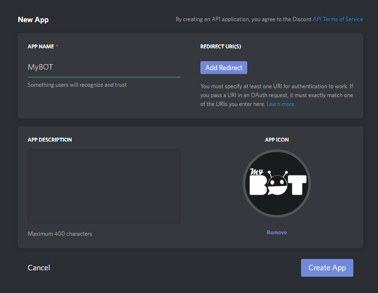
Ignore el "Add Redirect URI (s)", esta sección no es útil para usted en este momento.
Una vez ingresado todo los datos, clic en el boton "Create App".
Despues de crear la aplicación, le llevara a 2 nuevas secciones, la primera es la ID de la aplicación y la segunda te permitira crear el Bot. Eso es exactamente lo que vamos hacer, asi que haga clic en "Create a Bot User".
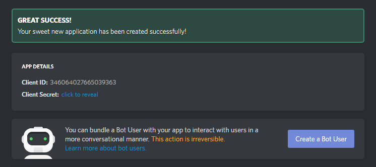
Luego damos clic en "Yes, Do it.".
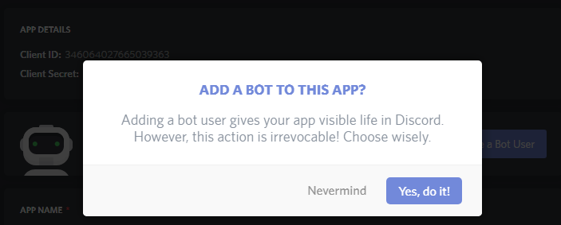
Usted a completado el proceso de crear la aplicación y el bot, darle clic en Public Bot:
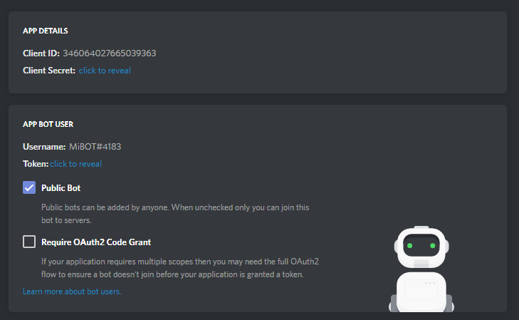
Si esto es así, haga clic en "save changes" para guardar todo.
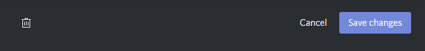
ATENCIÓN: Esta parte es realmente importante, el token de su bot está destinado a ser SECRETO. Es la forma en que Discord autentica el bot, asi como cuando inicias sección con un nombre de usuario y una contraseña. Revelar su token es como poner su contraseña en publico, si su token llega a ser publica y usado por otros, cámbielo de inmediato.
El Token es secreto, como acabo de mencionar, es la forma en que el bot se autentica.
Para el token, basta con hacer clic en "Click to reveal" en la sección del App Bot.
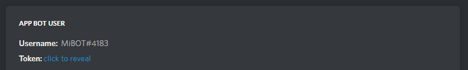
A continuación, obtendra su token secreto:
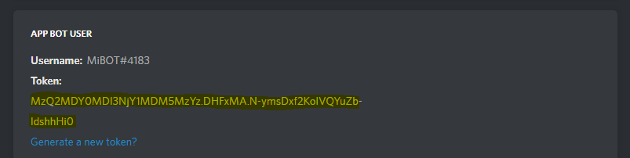
NOTA: El token mostrado en este ejemplo no es válido. También asegúrese de copiar y guardar el Token para utilizarlo mas adelante.
Bien, incluso si no ha escrito ni una sola línea de código para su bot, ya puede invitarlo a un servidor.
Para invitar a un bot, necesita los permisos de "ADMINISTRADOR" del servidor a donde agregara el bot o ser el creador. De esa forma podra agregar un bot.
Copiar el ID de su bot, de la pagina de la aplicacion.
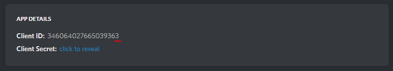
Para generar el link de invitación de su bot utilizaremos una herramienta API de permisos, diríjase a esta pagina discordapi.com/permissions para generar el link de invitacion.
Pegar del ID del bot en "Insert Client Id here" de la siguiente forma.
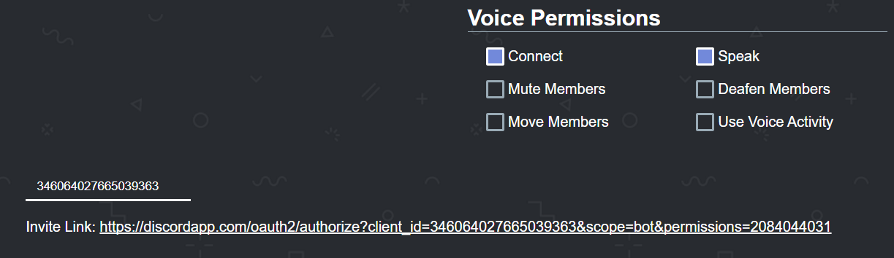
Abrir el link de invitación generado, se muestra una ventana que le permite elegir el servidor donde podra agregar el bot, simplemente seleccione el servidor y haga clic en "Autorizar".
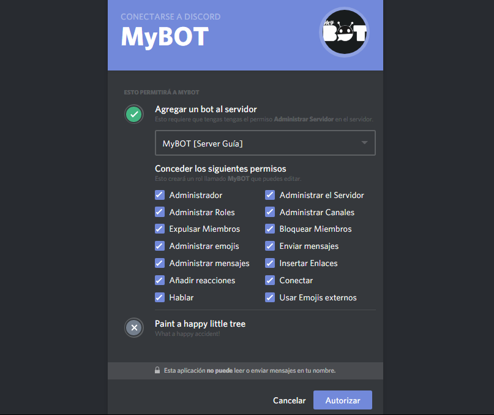
Una vez echo todos los pasos el bot se a unido al servidor invitado.
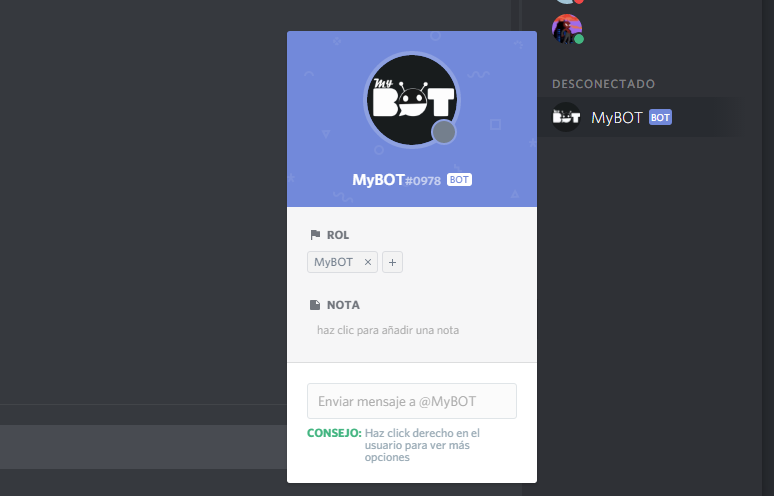
NOTA: Sólo puede agregar un bot a los servidores donde tenga permisos de ADMINISTRACION o ser el dueño del servidor.
El bot ingresara al servidor en estado de Desconectado, mas adelante veremos como activar el bot.
¡Éxito! Ahora tiene su bot agregado a su servidor, es hora de comenzar con el entorno de la programación. Siguiente
Si tiene alguna pregunta y/o duda después de leer esta guía, ingrese al servidor guía en Discord: MyBOT - Server guía.
Sitio web github/Crater